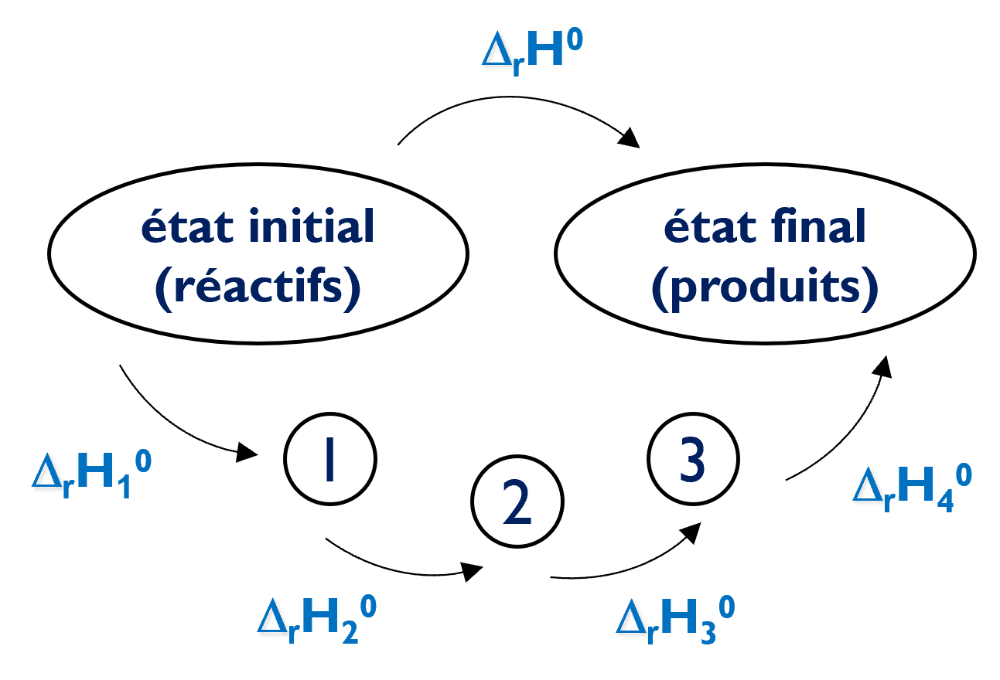

PARTIE 5 / 6
Cycles de Hess
Calculer une enthalpie de réaction à partir de données tabulées et de transformations connues.
Loi et diagramme de Hess
Loi de Hess
Soit une réaction globale qui mène d’un état initial à un état final. Une suite de réactions successives peut mener de l’un à l’autre : la variation d’enthalpie accompagnant la réaction globale est la somme des enthalpies des réactions successives.
Pourquoi parle-t-on de cycle ?
Un cycle ramène au point de départ. Dans le diagramme de Hess, on peut suivre le chemin indirect de l’état initial à l’état final, puis revenir par le chemin direct pris en sens inverse. La boucle est alors fermée.
L’enthalpie étant une fonction d’état, les deux chemins reliant les mêmes états ont donc la même variation d’enthalpie.

On prend les données dans le bon sens du cycle choisi et avec la bonne stœchiométrie.
- Inverser une réaction change le signe de son enthalpie.
- Multiplier une équation par un nombre multiplie son enthalpie par ce nombre.
- On additionne les équations pour retrouver la réaction cherchée.
Utiliser les enthalpies de dissociation
Pour former HCl(g) à partir de H₂(g) et Cl₂(g), on peut décomposer le calcul en deux étapes : dissocier les liaisons des réactifs, puis former la liaison H–Cl.
La dissociation demande de l’énergie ; la formation de la liaison correspond à la transformation inverse.
Conserver les phases dans les cycles
On ne simplifie une espèce présente de part et d’autre d’une somme d’équations que si sa formule et son état physique sont identiques. H₂O(l) et H₂O(g), ou une substance pure et la même substance dissoute (aq), ne s’annulent pas directement.
Pour les relier, ajoutez la transformation manquante avec son enthalpie : vaporisation, condensation, sublimation ou dissolution. Toutes les données combinées doivent correspondre à la même température, ou à l’approximation en température explicitement retenue.
Par exemple, pour deux moles d’eau et à la même température : ΔrH°combustion avec H₂O(l) = ΔrH°combustion avec H₂O(g) − 2ΔvapH°. La condensation apporte une contribution négative.
Passer par les atomes gazeux
Pour employer des enthalpies de liaison, tous les atomes intermédiaires doivent être gazeux. Un carbone initialement graphite doit donc passer par C(graphite) → C(g) : on ajoute son enthalpie de sublimation.
Comptez les liaisons dans chaque molécule : H₂C=CH₂ possède quatre liaisons C–H et une liaison C=C. Le bilan est « énergie nécessaire aux liaisons rompues » moins « énergie libérée par les liaisons formées », avec les changements d’état nécessaires.
Les enthalpies de liaison moyennes fournissent une estimation : leur valeur dépend de l’environnement chimique. Un calcul avec ces moyennes peut donc différer d’un calcul fondé sur les enthalpies de formation des espèces précises.
Autres enthalpies indiquées
Enthalpie d’ionisation
M(g) → M⁺(g) + e⁻ ; ΔionH° > 0.
Enthalpie d’attachement électronique
M(g) + e⁻ → M⁻(g) ; ΔAEH°.
Construire un cycle avec des combustions
L’exercice du propane utilise les combustions du propane, du carbone et du dihydrogène pour retrouver la réaction de formation :
Commencez par retrouver les coefficients et le sens de chaque réaction. Additionnez ensuite les enthalpies correspondantes.
Assembler un cycle : exemple du propane
Modifiez le sens et le coefficient de chaque équation pour observer les espèces qui s’annulent.
Retrouver la réaction 3 C(graphite) + 4 H₂(g) → C₃H₈(g) à partir des équations ci-dessous.
- C₃H₈(g) + 5 O₂(g) → 3 CO₂(g) + 4 H₂O(l), ΔrH°₁ = −2220 kJ·mol⁻¹.
- C(graphite) + O₂(g) → CO₂(g), ΔrH°₂ = −394 kJ·mol⁻¹.
- H₂(g) + ½ O₂(g) → H₂O(l), ΔrH°₃ = −286 kJ·mol⁻¹.
Un multiplicateur négatif inverse l’équation.
Données : références et précisions (hess)
Thermochimie · Lénaïc Lartigue · Cycles de Hess · CC BY-NC-ND 4.0
6 questions de compréhension
Ces questions reprennent les définitions et les relations. Vous pouvez recommencer.
Exercices
Après le QCM, construisez votre raisonnement sur votre brouillon, puis saisissez les résultats demandés. Les étapes du calcul figurent dans la correction détaillée, consultable après une tentative.
Vos réponses sont conservées dans ce navigateur. Ce suivi est un repère de travail, pas une note.
EXERCICE 1
Former HCl avec les enthalpies de dissociation
Calculer l’enthalpie standard de formation du chlorure d’hydrogène gazeux : ½ H₂(g) + ½ Cl₂(g) → HCl(g).
Enthalpies molaires de dissociation : H₂ = 436 ; Cl₂ = 243 ; HCl = 432 kJ·mol⁻¹, à la même température.
Données : références et précisions (liaisons)
Indice 1
Faites passer les réactifs par les mêmes atomes gazeux, puis reformez HCl.
Indice 2
Une liaison rompue coûte de l’énergie ; la même liaison formée apporte la contribution opposée.
Correction détaillée
1. Passer par les atomes gazeux. On dissocie ½ mol de H₂ et ½ mol de Cl₂ : Q₁ = ½ × 436 + ½ × 243 = 339,5 kJ pour une mole de HCl formée.
2. Former HCl. H(g) + Cl(g) → HCl(g) est l’inverse de la dissociation de HCl. Sa contribution est donc −432 kJ·mol⁻¹.
3. Additionner les étapes. Les atomes intermédiaires s’annulent. ΔfH°(HCl,g) = 339,5 − 432 = −92,5 kJ·mol⁻¹. La formation est exothermique.
EXERCICE 2
Construire le cycle du propane
Retrouver la réaction 3 C(graphite) + 4 H₂(g) → C₃H₈(g) à partir des équations ci-dessous.
- C₃H₈(g) + 5 O₂(g) → 3 CO₂(g) + 4 H₂O(l), ΔrH°₁ = −2220 kJ·mol⁻¹.
- C(graphite) + O₂(g) → CO₂(g), ΔrH°₂ = −394 kJ·mol⁻¹.
- H₂(g) + ½ O₂(g) → H₂O(l), ΔrH°₃ = −286 kJ·mol⁻¹.
Un multiplicateur négatif inverse l’équation.
Déterminez l’enthalpie standard de formation du propane, en kJ·mol⁻¹.
Indice 1
Commencez par les espèces qui ne figurent que dans une des équations.
Indice 2
Vérifiez que O₂, CO₂ et H₂O s’annulent avant d’additionner les enthalpies.
Correction détaillée
1. Orienter les équations. Le propane est un produit : on inverse l’équation 1, ce qui change le signe de son enthalpie. On multiplie l’équation 2 par 3 et l’équation 3 par 4.
2. Écrire les transformations.
3 CO₂(g) + 4 H₂O(l) → C₃H₈(g) + 5 O₂(g), +2 220 kJ·mol⁻¹ ;
3 C(graphite) + 3 O₂(g) → 3 CO₂(g), −1 182 kJ·mol⁻¹ ;
4 H₂(g) + 2 O₂(g) → 4 H₂O(l), −1 144 kJ·mol⁻¹.
3. Simplifier. Les 3 CO₂, 4 H₂O et 5 O₂ s’annulent. Il reste 3 C(graphite) + 4 H₂(g) → C₃H₈(g).
4. Calculer. ΔfH° = −(−2 220) + 3(−394) + 4(−286) = −106 kJ·mol⁻¹, avec les données.
EXERCICE 3
Choisir le sens et le coefficient
On part de H₂O(l) → H₂O(g), ΔH₁ = +40,7 kJ pour une mole d’eau à 100 °C. Les transformations suivantes sont prises à cette même température.
Données : références et précisions (eau)
Indice 1
Appliquez à l’enthalpie la même opération qu’à l’équation.
Correction
1. −40,7 kJ. 2. 2 × 40,7 = +81,4 kJ. 3. Non : il faut ajouter le changement d’état pour relier le liquide et le gaz.
Discussion · Cycles de Hess
Posez votre question et décrivez le raisonnement qui vous pose problème. Les échanges sont publics.
Vous pouvez aussi poser vos questions par mail ou pendant une séance à distance.